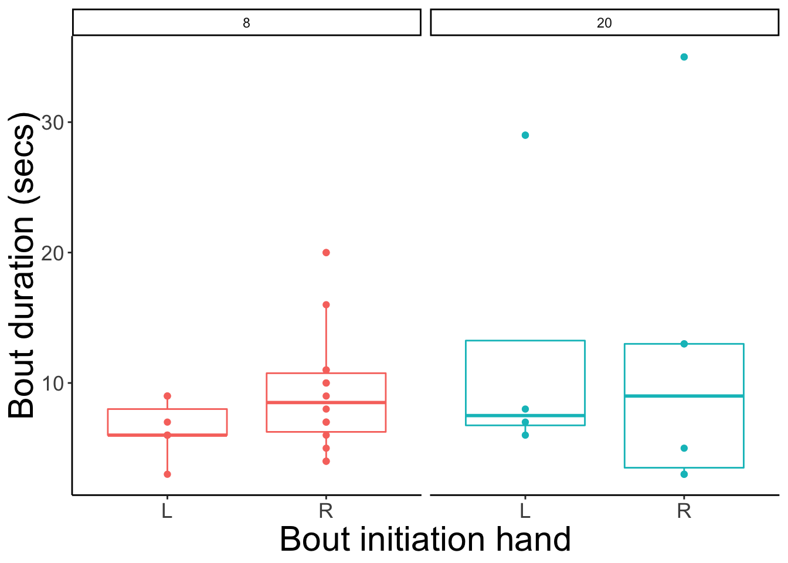

Evaluate ‘mode’ of crawling in PLAY project infants.
12-mo-olds drawn from
Adolph, K., Tamis-LeMonda, C. & Gilmore, R.O. (2017). PLAY Project: Pilot Data Collections. Databrary. Retrieved March 12, 2019 from https://nyu.databrary.org/volume/444#panel-data.
Crawling is defined as locomotion in which the infant independently uses both right and left hands and knees with contact to the floor to move across a distance greater than 2 feet.
Hand onset is defined as the specific hand used to initiate hands-knees crawling.
Contralateral gait is defined as the usage of opposite hand and knee to move independently across a distance greater than 2 feet. Unilateral gait is defined as the usage of same-side hand and knee to move independently across a distance greater than 2 feet.
The Datavyu (.opf) files are located in ~/Box\ Sync/b-gilmore-lab-group\ Shared/gilmore-lab/pubs/psi-chi/2019/crawl-type/.
Let’s list them.
data_dir <- '~/Box\ Sync/b-gilmore-lab-group\ Shared/gilmore-lab/pubs/psi-chi/2019/crawl-type/'
dv_fl <- list.files(data_dir, pattern = '\\.opf$', full.names = TRUE)
dv_fl## [1] "/Users/rick/Box Sync/b-gilmore-lab-group Shared/gilmore-lab/pubs/psi-chi/2019/crawl-type//PLAY_Locomotion_Code.opf.S13.opf"
## [2] "/Users/rick/Box Sync/b-gilmore-lab-group Shared/gilmore-lab/pubs/psi-chi/2019/crawl-type//PLAY_Locomotion_Code.opf.S8.opf"Extract into subject-specific directories, e.g., /13, etc.
# Extract sub number and reformat
subs <- stringr::str_match(dv_fl, pattern = '\\.S([0-9]+)\\.')[,2]
subs <- stringr::str_pad(subs, 2, pad='0')
extract_dv(in_dir = data_dir, in_fn = dv_fl[1], out_dir = paste0('crawling-mode_data/', subs[1]))## [1] "crawling-mode_data/13"extract_dv(in_dir = data_dir, in_fn = dv_fl[2], out_dir = paste0('crawling-mode_data/', subs[2]))## [1] "crawling-mode_data/08"Convert the Datavyu files to CSVs.
s13_csv <- dv_to_csv(dv_dir = 'crawling-mode_data/13', vb = TRUE)## 5 lines read from file db## No Datavyu file found in crawling-mode_data/13## Creating unique filename.## 1 lines written to file: crawling-mode_data/13/2019-04-04-0503-21.csvs08_csv <- dv_to_csv(dv_dir = 'crawling-mode_data/08', vb = TRUE)## 56 lines read from file db## No Datavyu file found in crawling-mode_data/08## Creating unique filename.## 51 lines written to file: crawling-mode_data/08/2019-04-04-0503-21.csvNow we can read the Datavyu files as data frames.
library(tidyverse)
s13 <- read_csv(s13_csv)## Parsed with column specification:
## cols(
## code = col_character(),
## onset = col_time(format = ""),
## offset = col_time(format = ""),
## code.value = col_character()
## )s08 <- read_csv(s08_csv)## Parsed with column specification:
## cols(
## code = col_character(),
## onset = col_time(format = ""),
## offset = col_time(format = ""),
## code.value = col_character()
## )s08 <- s08 %>%
mutate(duration = lubridate::as.period(offset - onset, unit = 'sec')) %>%
filter(duration > 0)Select hands and knees crawling episodes.
hk <- s08 %>%
filter(code == 'Crawling', code.value == 'hk')Select code c.
R_Initiation and L_Initiation episode datacode_r <- s08 %>%
filter(code == 'R_Initiation', code.value == 'c')code_l <- s08 %>%
filter(code == 'L_Initiation', code.value == 'c')Combine R_Initiation and L_Initiation into single field.
crawl_init <- s08 %>%
filter(code %in% c('R_Initiation', 'L_Initiation')) %>%
rename(hand = code) %>%
select(hand, onset, offset, duration)
crawl_init$hand <- stringr::str_sub(crawl_init$hand, 1, 1)crawl_init %>%
ggplot() +
aes(x = hand, y = duration) +
geom_boxplot() +
geom_point() +
xlab('Bout initiation hand') +
ylab('Bout duration (secs)') +
ggtitle('Participant 08') +
theme(axis.title = element_text(size = rel(2)),
axis.text = element_text(size = rel(1.5)),
plot.title = element_text(size = rel(2)))
Note that the figure(s) are located in crawling-mode_files/figure-html/.
https://nyu.databrary.org/slot/18811/1283000,1294000/asset/85451/download?inline=true
source('R/write_video_clip_html.R')
source('R/url_from_segment.R')seg_index <- 1
url <- url_from_segment(code_r[seg_index,], 444, 18811, 85451)
write_video_clip_html(url)https://nyu.databrary.org/slot/18811/1283000,1294000/asset/85451/download?inline=true
seg_index <- 1
url <- url_from_segment(code_l[seg_index,], 444, 18811, 85451)
write_video_clip_html(url)https://nyu.databrary.org/slot/18811/8000,17000/asset/85451/download?inline=true